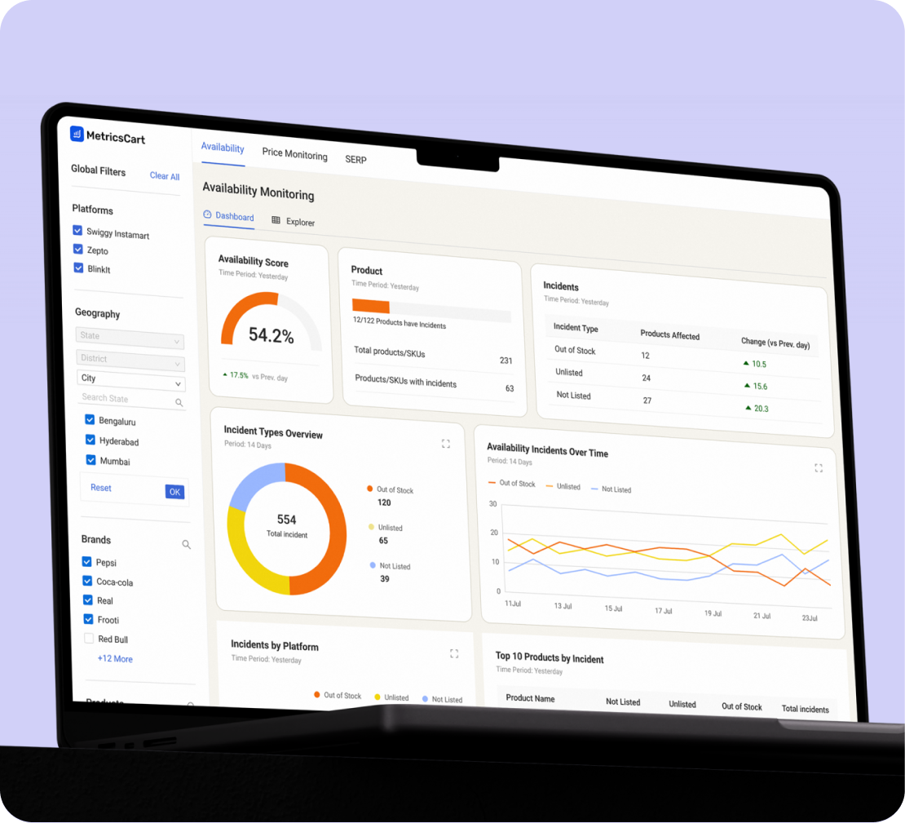
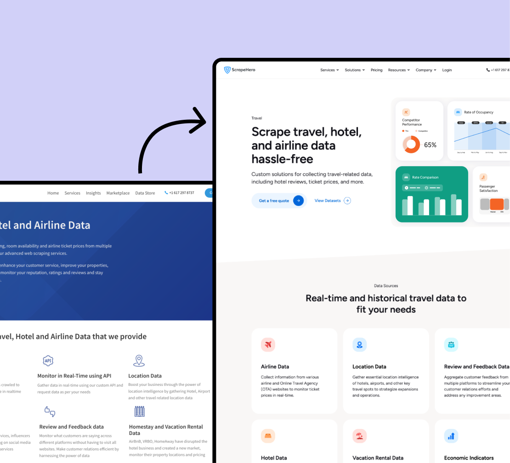

Hi, I'm Ashik Shihab
Product Designer working on B2B SaaS and analytics
I design end-to-end product experiences, with a focus on complex workflows and the systems that hold them together. Roughly 4 years across analytics platforms, marketplaces, and data products.
Shipped
Work
MetricsCart
Digital Shelf analytics platform
Sole designer on a quick-commerce digital shelf analytics platform. Designed the product end-to-end and built the marketing site that supports it.
Impact
Shipped the MVP across 30+ hi-fi screens covering dashboards, tabular views, and a multi-level geographic drill-down system. Marketing site CTA clicks grew ~16× (~500 to ~8,000/month), generating 12 qualified demo requests per month.
Role
- Product Designer
- Website Design + Development
- Brand & Creative Team Oversight

ScrapeHero
Data as a Service Ecosystem
Three connected surfaces of a global data-as-a-service ecosystem: an enterprise services site (40+ pages), a self-serve marketplace, and a 3,200+ dataset e-commerce store. One product designer, one design system.
Impact
Lifted Cloud subscription conversion ~15% and reduced drop-off ~10% via PostHog-validated UX fixes. Redesigned the data store's listings, PDP, filtering, and checkout flow. Unified the visual system across all three surfaces.
Role
- Product & UX Designer
- Website Design + Development
- Brand & Creative Team Oversight

About Me
I’m a product designer with a strong UX core working on B2B SaaS and analytics platforms. My strength is breaking down complex workflows and data-heavy problems into clear, usable product experiences. I approach design through curiosity, logic, and structure, focusing on how the system works before shaping the interface.
My work spans product features, marketplaces, and web platforms, from interaction flows to shipped interfaces and production builds. I collaborate closely with product, engineering, and growth teams, using data, constraints, and usage patterns to guide decisions.
Alongside hands-on design, I take ownership of design quality and experience consistency across projects. I contribute to direction, reviews, and workflow improvements and move comfortably between product thinking, detailed UX decisions, and execution.
Work Experience
Turbolab Technologies
Kochi, Kerala, India
-
UI/UX Designer
Jul 2023 - Present
-
Visual Designer
Aug 2022 - Jul 2023
Skills
- Product Design
- UX Strategy
- Interface & Interaction Design
- Information Architecture
- Data-Informed Decision Making
- Workflow & Systems Thinking
- Design Quality Ownership
- Cross-Functional Collaboration